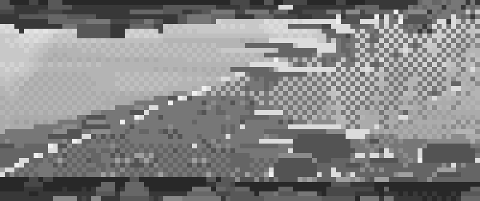
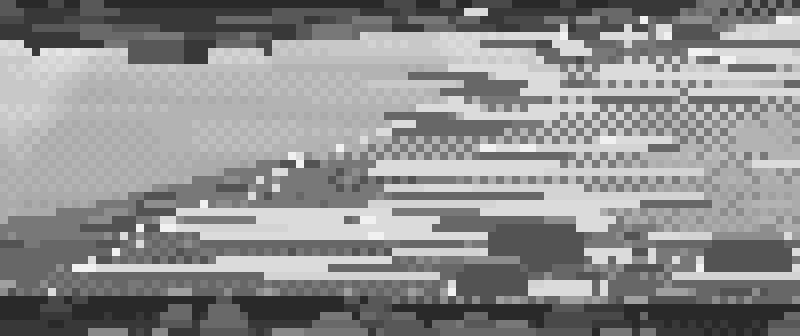
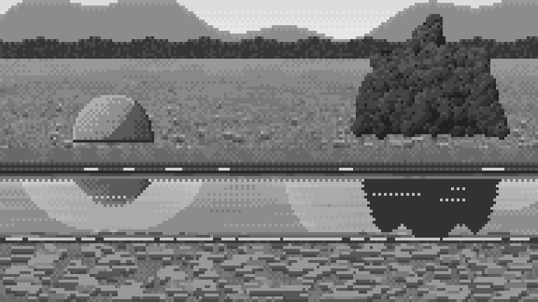
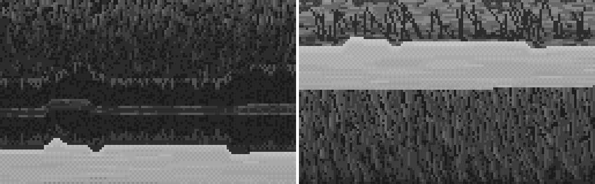
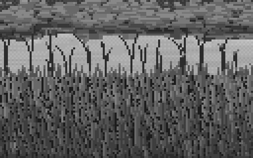
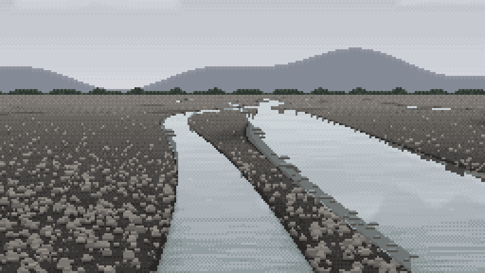
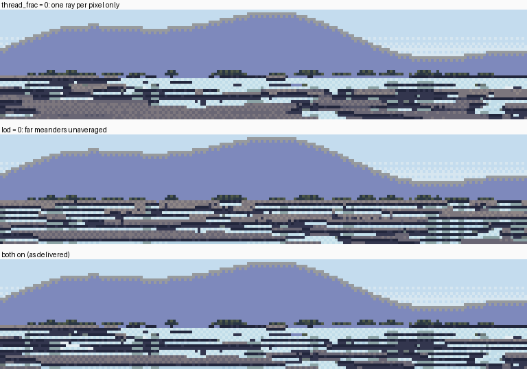
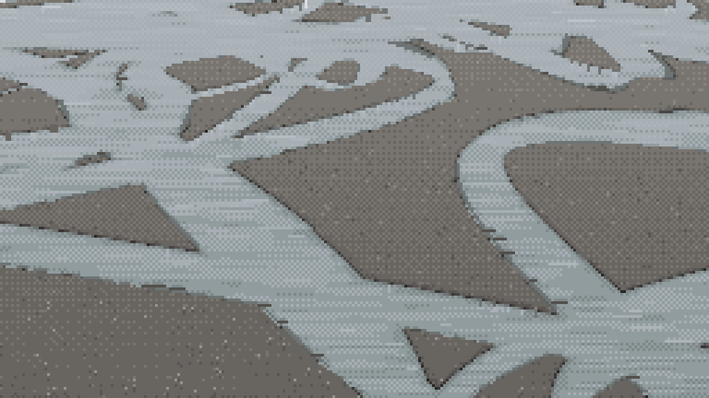

8. The tells: eighteen ways my pixel water gave itself away
What it's for. Every image here is one I actually made, with the critic's word for it where there was one, why it happened, and what fixed it. I'd read this page before painting any water: most of these tells come from a rule that is correct but was applied in one row, one line, or at one spacing.
Three families cover almost all of them:
- a line where there should be a material: one row of checker, a ruled diagonal, a dotted edge;
- a period where there should be a variety: even spacing, equal lengths, one bump repeated;
- a primitive where there should be a form: a perfect dome, a V, a polygon.
Lines where there should be a material
1. Morse code. A single row of 50% checker reads as a dotted line, never as a blend.

nb055: the far meniscus, the reflected foot and the near lap line, each one dotted row. Fix: a flat tint with a stepped boundary (runs of 3–16 px), or a value change that a texture carries. A checker is only a material over several rows. (how-to 4)
2. The ruled diagonal. A long straight 45° edge is the fastest giveaway in a copy.

nb032, copy A v4: the glitter band's lower edge and the dark wedge under it are one straight line at 3×. Fix: the edge dies out through thinning marks, with a few specks spilling past it.
3. The same tell in a new costume. My fix for 2 was a 45° band of checker, and it read as a zip.

nb047, copy A v10, lower right. Fix: a short margin with sparse specks, no band. When you fix a tell, look for it again in the fix.
4. The dotted ruled front. A riffle's upstream edge drawn as a straight diagonal of single light pixels.

nb122. Fix: the lip follows the bed (skewed and bowed), and it's where the marks are densest. (how-to 7)
5. Scanline tearing. Long flat light rectangles, 6–30 px, over checker.

nb124. Fix: riffle dashes are 1–5 px, varied in tone, sometimes turning into short arcs.
6. Water painted like sky. Flat bands with seams make a painted stripe.

nb062. Fix: the checker quantizer; the checker is the water's material. (how-to 2)
Periods where there should be a variety
7. The road. A ribbon of constant width with parallel edges.

nb029, copy A v1. Fix: the banks bite into the water in stepped notches 2–4 px deep; the width pinches and swells.
8. Brick courses. Gravel as horizontal dashes of similar length, laid in rows.

nb054, stage 1 v3, the near bank. Fix: stones at random heights, each a light-over-dark pair whose width is its size projected at that row; fill each row by area, so that big stones are few.
9. Camouflage. Stones as blobs of two greys at equal density over the whole bar. At 1× it reads as camo print and it's the loudest thing in the picture.

nb145, the stage 5 sheet. Fix: the bar is a calm field. Stones appear only close up (where the ground is more than 24 px per metre, and at full density from 64 px per metre), stone tops sit about one step above the ground, not four, and interstices appear only closer still. With the texture off, the water becomes the subject.
10. Chain-link. Rising chains in a riffle that cross in regular X's.

nb071, copy B v7, top half. Fix: his chains rise and lean outward, like a fountain, and rarely cross.
11. The picket fence. Grass as evenly spaced full-height bars.

nb098. Fix: Ferrari's lawn strands (stacked adjacent-value runs, paired stem and highlight, black gaps), ported from the master-copy student.
12. A row of forks. A fringe of Y-shaped blades at even spacing and even height.

nb106. Fix: a few clumps with long gaps; in each, blades of very different lengths (3:1), mostly leaning one way. Still too even at the end.
13. One bump repeated. A treeline of identical scallops at an exact interval.

nb130, the horizon. Fix: clumps of random width (3–14 px) and height, with occasional gaps.
14. The striped far band (found while writing these pages). With too many far threads, each with a dark contact row above it, the far band alternates light and dark row by row.

The bottom panel. Fix (not built): thin the threads with distance, and give far threads no edge marks. V02's far threads sit straight against his lightest marsh colour. (how-to 6, step 7)
Primitives where there should be a form
15. The heart. A dome's reflection coming to a point.

nb078. Fix: mirror the painted object about its own foot at water level (2·R0 − r), and let the bank's reflection cut it off at the top. It comes out as a squat inverted dome. (how-to 3)
16. The flat block. A tree's reflection as one dark tone with a scalloped edge.

nb057. Fix: copy the painted pixels, then the tone law. Never re-shade a reflection.
17. Spotlights. Dome-shaped clouds above the frame become hanging V-cones in the mirror.

nb066, 8×. Fix: stratocumulus banks with flat bases; mirrored, they lie as soft horizontal shapes.
18. Cut paper. Bars from above as flat polygons with sharp corners, and channels crossing in X's like roads.

nb139, the 30° oblique. Partly fixed (curves came back once the meander LOD scaled with the camera), but the bars are still not lobes, and the threads still cross at wide angles. The aerial photos show blunt rounded heads upstream, long tapering tails, and threads that split and rejoin at shallow Y's.

nb009, the NZ aerial reference. What 18 should look like. Unsolved.